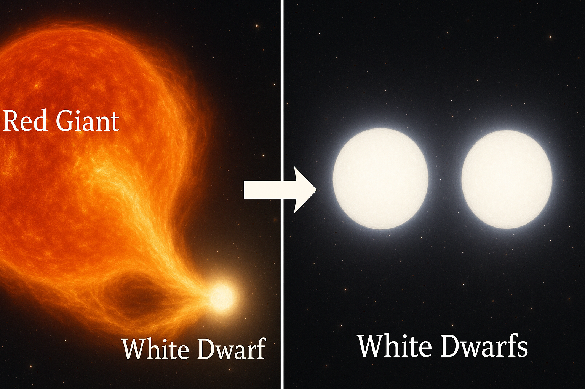
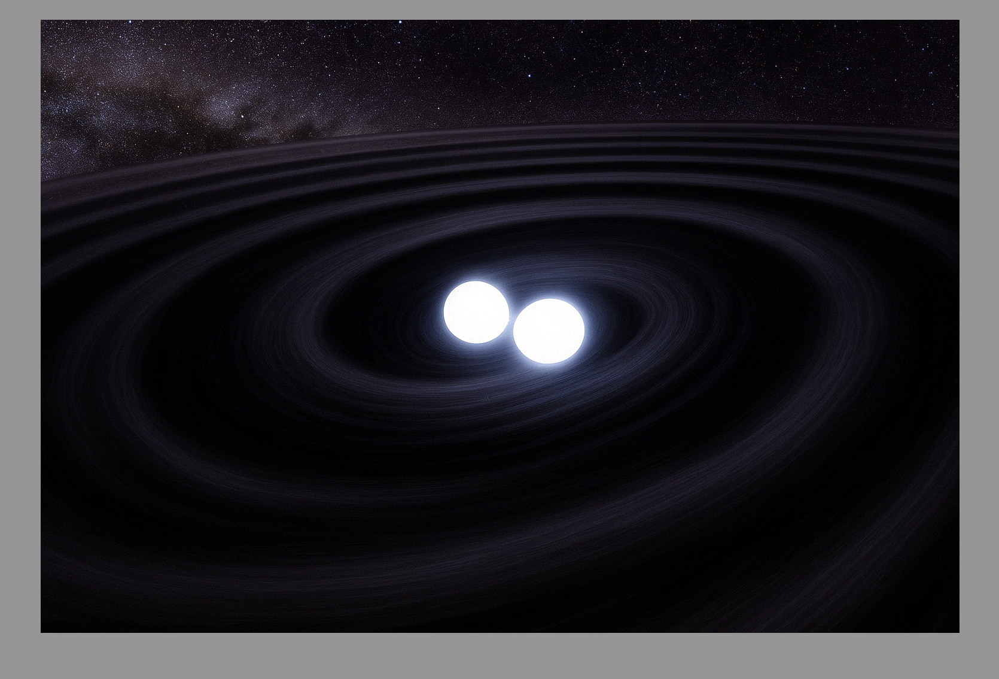

I performed 3-dimensional hydrodynamical simulations of mass transfer between a giant star and a point mass accretor. I focused on high mass transfer rates, where the mass transfer becomes highly non-conservative, and material spills out from the accretion disk in a stream that carries mass and angular momentum out of the binary.

I modeled the evolutionary history of short period double white dwarf binaries, many of which have recently been discovered with the Zwicky Transient Facility (ZTF). These binaries likely underwent a common envelope event which dramatically shrinking their orbits. I used MESA to create binary models representing both the states pre- and post-common envelope to estimate the energetic efficiency of the common envelope.

I implemented a tidal heating model for short-period white dwarf binaries in MESA, assuming the tidal response inside the white dwarf is a gravity wave, a traveling wave that can transfer energy and angular momentum into the interior. The model self-consistently calculated the traveling wave amplitude as a function of white dwarf structure, for many white dwarf models as they evolved, and deposited energy into the white dwarf, heating it near the surface.

I determined the host environments and delay times associated with a sample of Ca-rich gap transients, a mysterious class of transient that are fast, faint-evolving, and usually located far from sites of star formation. I compared with the host environments of samples of 91bg-like supernova, Type Ia supernova, and Type II supernova. By comparing the masses and star formation rates of the host galaxies, as well as the delay times, I demonstrated a significant similarity between Ca-rich gap transients and 91bg-like supernova.